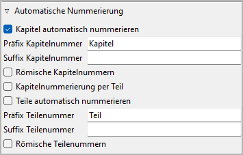
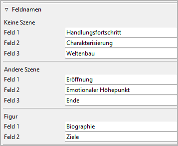
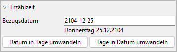
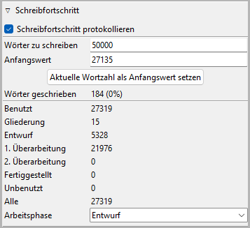

The Buch properties view opens in the right pane when you
select „Buch“ in the tree, or when you click on the
toolbar icon. It is the initial view after opening a novelibre project.
Titel und Beschreibung are displayed in an editable „Karteikarte“.
The editing of book Titel and author can be completed by pressing the Enter key.
Changes to the description are applied when the mouse is clicked
anywhere outside the text input field.
After exporting the book to an ODT document, Titel and description
appear in the document properties.
Aufklappen or collapse this frame by clicking on the label.

Auto number chapters/parts when refreshing the tree
If this checkbox is ticked, all chapters/parts are automatically numbered
each time the tree is refreshed.
The chapter Titels are replaced with a prefix-number-suffix
pattern (without the dashes).
Hinweis
You can optionally exclude individual chapters/parts from auto-numbering
in the Kapitel/part properties.
Prefix and suffix entries can be completed by pressing the Enter key.
Bemerkung
Make sure to add a space character to separate the prefix or
suffix from the chapter or part number.
Römische Kapitelnummern
By default, arabic numbers, like „1“, „2“, „3“ … are used for auto-numbering.
If this checkbox is ticked, Roman numbers, like „I“, „II“, „III“, „IV“ …
are used instead.
Reset chapter numbers when starting a new part
By default, the chapters are numbered consistently across the parts.
If this checkbox is ticked, the chapter numbering starts again with „1“
in each part.
Aufklappen or collapse this frame by clicking on the label.

novelibre provides some ready-made fields for sections and characters
to store information that should be at hand when writing.
If the default categories do not fit into your individual story planning
concept, you can rename these fields.
Editing the categories can be completed by pressing the Enter key.
Abschnitt fields
The heading replacements for Ziel, Konflikt, and Ausgang are
used when you set the Aktion/Reaktion frame to Benutzerdefiniert.
You can do this individually for each section.
Figur fields
If you want other categories than Biographie
and Ziele for your characters, you
can enter them here. They will then apply to all characters.
Bemerkung
If you rename the Biographie frame, it will keep the Birth/death date
entries anyway.
Aufklappen or collapse this frame by clicking on the label.

To get an overview of the course of the narrative time, you can enter
date/time information for each section.
The date can be specific (YYYY-MM-DD) or unspecific (number of days,
e.g. from the beginning of the story).
Bezugsdatum
The reference date is optional. It can be used to convert relative dates
into absolute dates, or vice versa. The timeline software plugins may
use the reference date for creating events from sections that have no
date or an unspecific one.
Format: YYYY-MM-DD, according to ISO 8601.
Hinweis
Even if you don’t need specific dates for your story, specifying
a reference date might be helpful. Thus, a day of the week
can be displayed along with the unspecific date, and ages can be calculated for
related characters.
Datum in Tage umwandeln
This transforms specific section dates into days, related to the
reference date.
Tage in Datum umwandeln
This transforms unspecific section dates into specific ones, using
the reference date.
Bemerkung
For large novels, the conversion may take some time, depending on
your system. During the conversion time, the clicked Schaltfläche will
display „Bitte warten …“.
Hinweis
The commands above convert all dated sections at once. If you want to
do the conversion for single sections, just go to the
Abschnitt properties view.
Aufklappen or collapse this frame by clicking on the label.

With novelibre, you can set a word count target and track your
writing progress.
Bemerkung
Regardless of the entries made here, you can see the word count
in the status bar at any time.
Schreibfortschritt protokollieren
By default, novelibre stores a log entry with the word counts
for each day on which you edit the project. You can prevent
this by unticking the Schreibfortschritt protokollieren checkbox.
Hinweis
For viewing the daily progress log, you may want to
install the nv_progress plugin.
Wörter zu schreiben
Here you can enter a number (without decimal points or separators)
indicating your writing goal in words.
The entry can be completed by pressing the Enter key.
Anfangswert
Here you can enter a number (without decimal points or separators)
indicating the word count you want to start from.
The entry can be completed by pressing the Enter key.
Aktuelle Wortzahl als Anfangswert setzen
Click this Schaltfläche to enter your current word count in the Beginning
count field.
Wörter geschrieben
Here the difference between your actual word count and the starting
count is displayed. The percentage refers to the words to write.
A cover thumbnail is displayed with the book properties if you
provide a PNG image file with the project name along with the .novx
file. The recommended image width is 100 to 200 pixels.